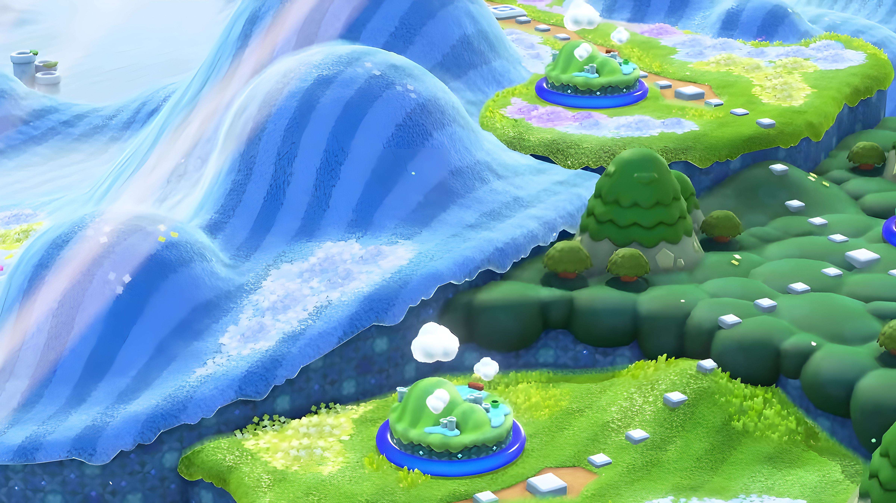
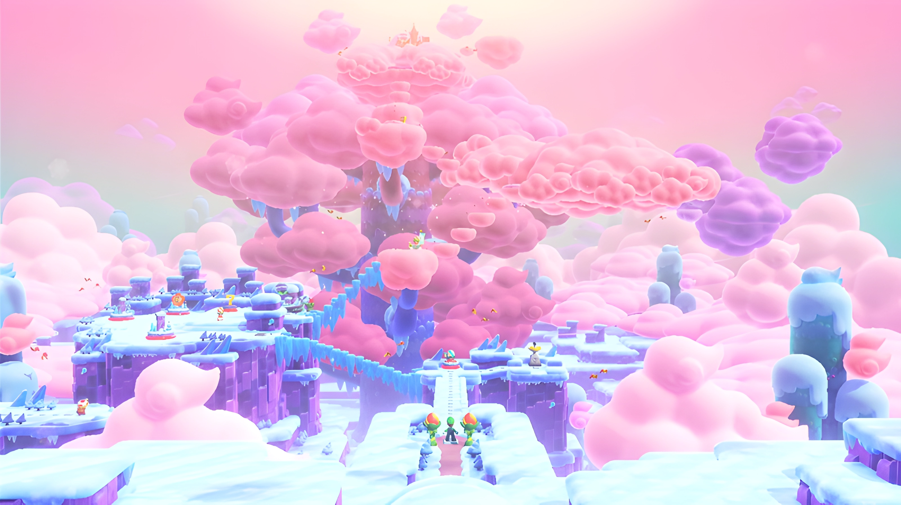
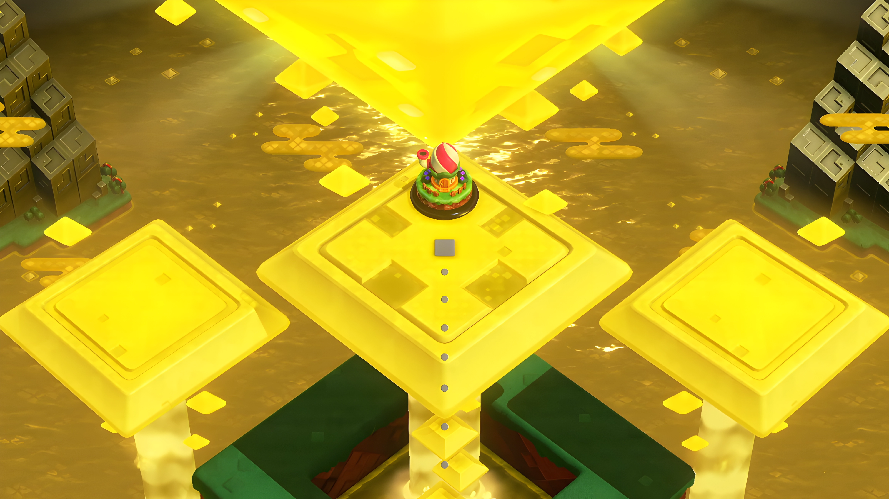

- You can find this Wonder in the first course of the game. Pipes are coming to life and start moving around like big worms. You can reach bigger heights which helps you collecting collectables.
- In the course "Piranha Plants on Parade" the level turns into an autoscroller and Piranha Plants start singing a Song. It’s a very enjoyable Wonder.
- The Wonder of the course "Scram Skedaddlers" comes with a huge rain of superstars which turn you constantly invincible. Watch out! If you don’t a collect another Star within 10 Seconds the effect will stop.
- Don’t get knocked over from the Bulrush appearing in „Bulrush Coming Through!“ As the name states a stampede of bulrushes gets triggered and they will take you on a special route. A 60 second timer is given for collecting the Wonder Seed.
- In "Here Come the Hoppos" the Wonder Flower triggers many hoppos to roll around the course which leads to a hard time staying in control of Mario. This wonder is very short that’s why the Time Limit of 60 seconds is more than generous.
- The Wonder of the course "Rolla Koopa Derby" turns out to be a very good and long effect. Giant slopes with Koopas on rollerskates appear. As a result you will have to collect Wonder Tokens to reveal the Wonder Seed at the top of the Tree.
- The first encounter with an actual rhythm level is in "Angry Spikes and Sinkin‘ Pipes" music starts playing and you have to avoid spike balls by listening to the beat.
- Silhouette Levels? Yes there is! In the level "Sproings in the Twilight Forest" The player, the enemies and the background suddenly gets much taller. You can change the whole atmosphere by crouching.
- The Castle in W1 "Pipe-Rock Plateau Palace" serves a pretty simple wonder. Throughout the Course Pipes starts falling. Try not to be squished.
W1-Pipe-Rock Plateau

- By collecting the Wonder Flower in "Outmaway Valley" you trigger a massive snowball on which you have to ride on to get to the end of the course.
- In "Pokipede Pass" as a result of hitting the wonder flower snow start’s falling. When they hit the ground they create snow blocks.
- One of the more exciting wonders is hidden in "Condarts Away". Suddenly your character starts walking on the walls in the background which completely changes the game style.
- More transformation with "Up ˋnˋ Down with Puffy Lifts" you turn into a Puffy lift and you need to dodge Spikeballs to reach the Wonder seed.
- The course gets to a rhythm parcour in "Jump! Jump! Jump!"
- Free fall with Mario in "Countdown to Drop Down".
- By collecting a wonder flower in "Cruising with Linking Lifts" you trigger 3 Lakitus on cloud to spawn. They will throw items and wonder tokens at you.
- In the battleship "Fluff-Puff Peaks Flying Battleship" a giant bowser head with a cannon aims at the player trying to shoot them.
W2-Fluff-Puff Peaks

- In "The Hoppycat Trial: Hop, Hop and Awaaay" giant Hoppycats will appear that can break grounds and other blocks.
- Hmm? Something is fishy in "The Anglefish Trial: Ready, Aim, Fly!". Multiple Anglefish start flying through the course which allows the player to reach new heights.
- "The Midway trial: Hop to It" is another transformation level. By collecting the Wonder Flower you turn into a Hoppycat.
W3-Shining Falls
